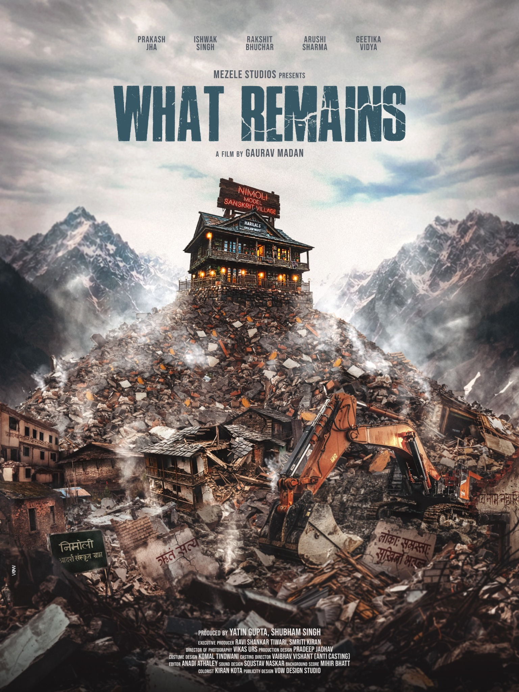
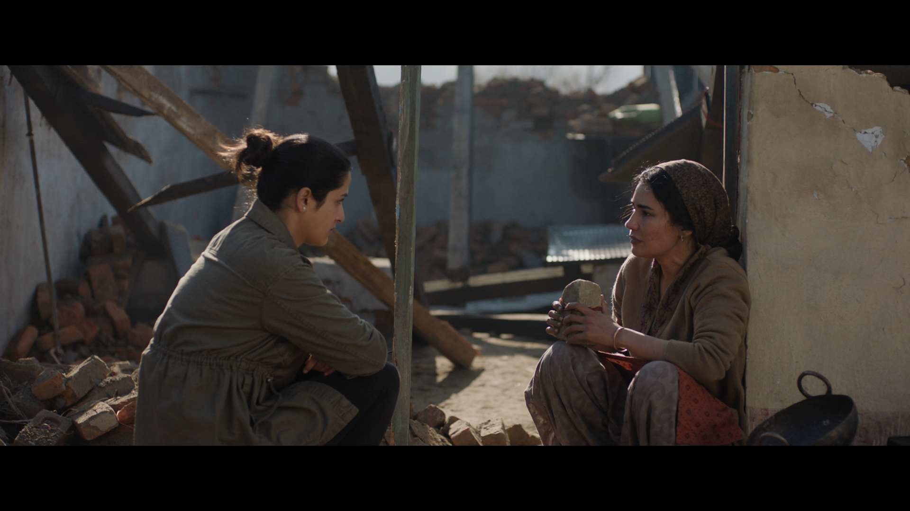
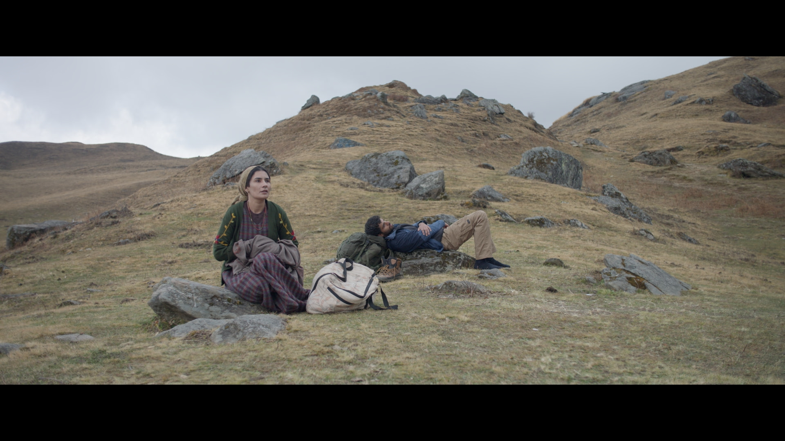
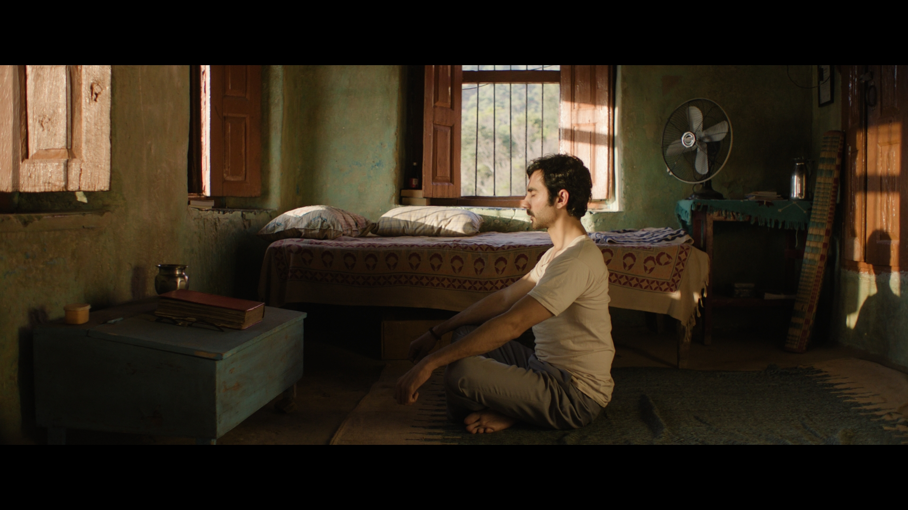
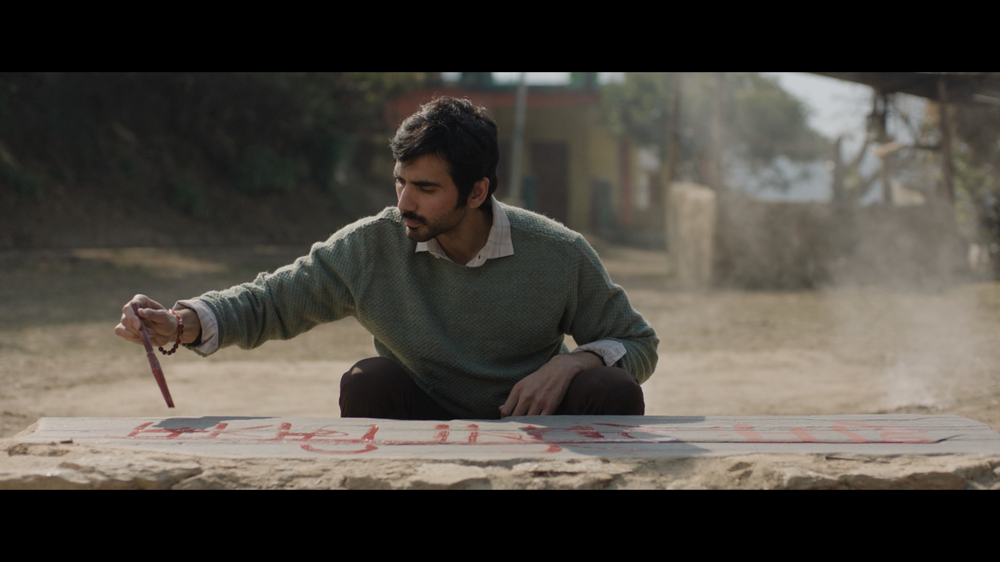
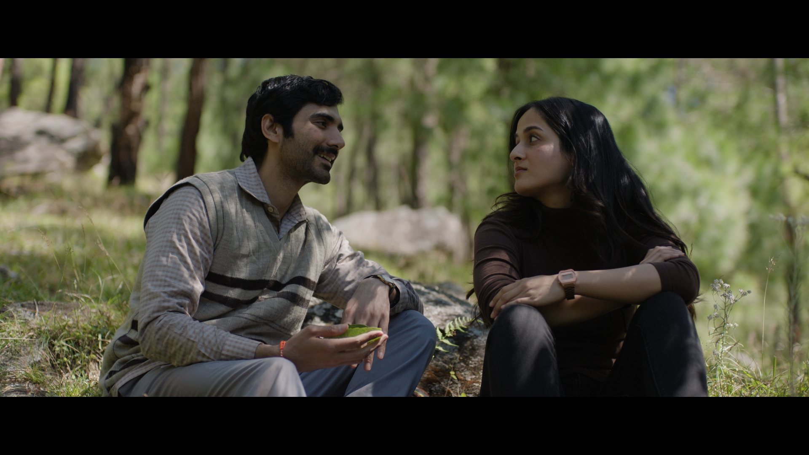
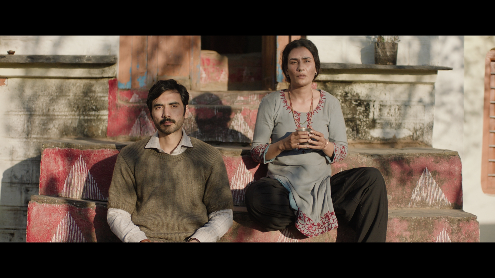
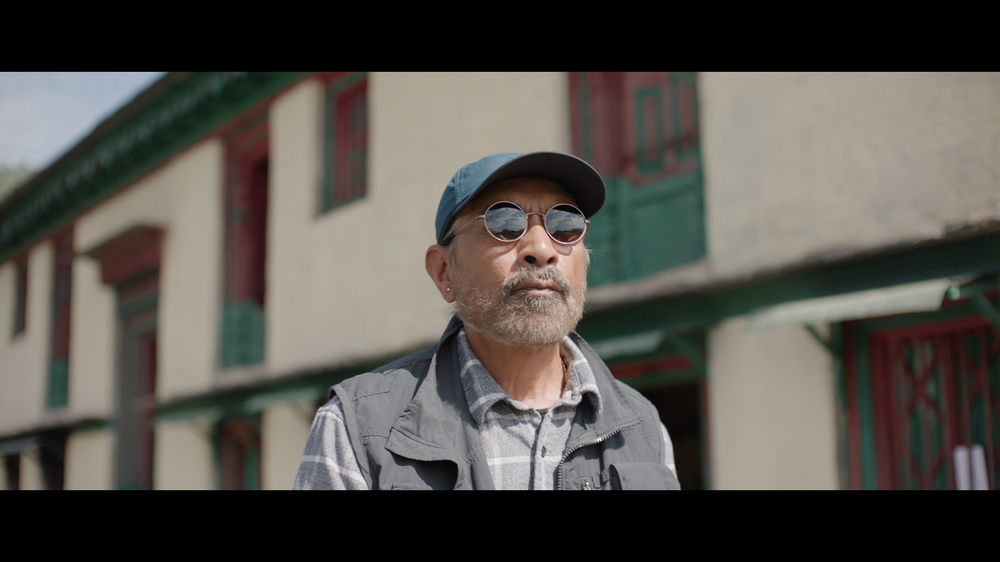

WHAT
REMAINS
As a mountain village fractures under unseen forces, a man who believes language can save the earth and another who believes spectacle can sell it drive the village toward the same, irreversible disappearance.
A village chosen for revival.
A landscape moving towards disappearance.
Between prayer and profit, belief and reason, the mountains keep their own counsel.
In the remote Himalayan hamlet of Nimoli, an ancient whistling drifts through the mountains the villagers call the Triplets. When the government declares the village a Model Sanskrit Village, Pankul, a devoted Sanskrit teacher, returns home believing language can restore balance between land and people. But as the ground begins to crack and houses tilt, Harilal, an ambitious homestay owner, turns Nimoli’s slow collapse into a spectacle for tourists. A geoscientist’s warnings go unheard. Between prayer and profit, the village is gradually reclaimed by the mountains that once held it.
A place between prayer and profit.
Images from the film







Director’s statement
Nimoli was born from listening to places that are changing too slowly to be called disasters and too quickly to be called natural. Across the Himalayan region, villages tilt, roads fracture, and rivers shift course—not in moments of spectacle, but in long, almost polite gestures of withdrawal.
What interested me was not only the physical collapse of land, but the emotional and moral architectures that rise in response to it: belief, ambition, denial, and devotion.
The film unfolds around two men who appear to stand on opposite ends of a spectrum. Pankul believes language can restore balance between humans and the earth. Harilal believes in visibility—if a place can be seen, packaged, and sold, it can survive. Yet both are consumed by their vocations. Both refuse to listen when the land itself begins to speak.
Nimoli is not a film about solutions. It is about attention. About what we choose to hear, what we choose to ignore, and how entire landscapes can disappear while we remain fully occupied with our own ideas of saving them.
Cast
Key credits
Production company
Mazele Studios
Director
Gaurav Madan
Producers
Yatin Gupta, Shubham Singh
Executive producers
Ravi Shankar Tiwari, Smriti Kiran
Let’s talk
about the film.
For sales, distribution, festival and industry enquiries.